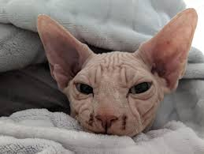

Locul perfect unde sa iti gasesti cel mai bun prieten.
Se spune despre pisici ca sunt cele mai elegante animale. Descopera pisicile de rasa disponibile!
Lalea este o pisica persana alba, care si-a dobandit numele pentru ca in prima zi aici a furat o lalea dintr-o vaza. Are sase luni si iubeste tonul.
O pisica Sphynx foarte linistita. Helios este cel mai cuminte pisoi, are patru luni si este castrat.
Zuza este siameza, rasa recunoscuta pentru cat de vorbarete sunt. Iubeste sa fie inconjurata de oameni si este foarte iubitoare. Are sase luni si este sterilizata.
Cartof este rasa Exotic Shorthair si si-a primit numele datorita culorii blanitei sale. Are trei luni si iubeste laptele.
Iubeste sa fie scoasa afara si sa stea cu copiii. Este rasa Russian Blue si are cea mai fina blanita.
Rasa Maine Coon este apreciata pentru blana sa si eleganta. Simba are sase luni si isi cauta un stapan iubitor.